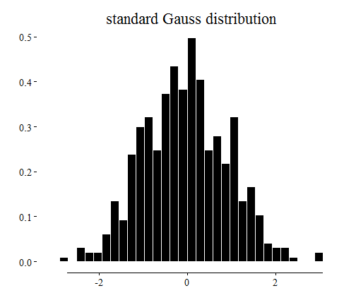

- Introduction
- Showcase
- Shiny
- Structure
- Making an App
- Reactivity
- Shiny
- Showcases
- Sharing
- Acknowledgements
Interactive Webapps with Shiny
An Introduction
Dr. Simon Mueller
www.muon-stat.com
Agenda
Introduction: About
Me
- Diplom Mathematician (2007)
- PhD in Stochastics (2011)
Professional
- 2012 - 2013 Biostatistician at Dr. Margarete Fischer-Bosch Institute for Clinical Pharmacology
- 2012 - today MUON-STAT - Statistical Services and Consultancy
- Statistical Consulting
- Software & Data Managment
- Training R, SPSS and Statistics

Introduction: What is Shiny ?
Shiny is a R-package from RStudio Inc.
- Originally developed my Joe Cheng
- Write interactive Web Applications Using (only) R
- no Need for HTML or Javascript for basic applications
- Open-Source and Enterprise Version
- Many extensions from the R-Community (rCharts, a workaround for multiple pages, ...)
- Great for communication and vizualiation
- teaching
- interactive data analysis
- custom analytic tools to explore data
- interactive presentation of your statistical analysis

Introduction: Resources
- Showcases
- Tutorial from RStudio
- Getting Help: Community
- Book
- Web Application Development Using R With Shiny by Chris Beeley
Showcase: Simple Example
Left side (sidebar panel) : inputs
Right side (main panel) : outputs
Engine : interface is running through two R files, namely
ui.Randserver.R
Shiny: Structure
A shiny app consists of two files:
ui.R (client side):
- User Interface
- Translation of the R-Code to a HTML webpage
To run a shiny app:
library(shiny)
shiny::runApp(AppPath)
AppPath is the path that contains ui.R and server.R
server.R (server side):
- data analysis
- computation
Shiny: Structure
ui.R :
shinyUI(pageWithSidebar(
headerPanel("app title"),
sidebarPanel(
***SET INPUTS***
),
mainPanel(
***RENDER OUTPUTS***
)
))
- Inputs are elements of the
inputlist - Outputs are elements of the
outputlist
server.R :
shinyServer(function(input, output, session) {
***GET INPUTS AND MAKE OUTPUTS***
})
ui.R:
- set input: Inputs are set through the widgets in the interface:
textInput(inputId="title", label="Title") - render output:
plotOutput("plot")
server.R:
- get input:
input$title(orinput[["title"]]) - make output:
output$plot <- renderPlot({ ... })
Shiny: Build-in Widgets
More widgets: check box, action button, date, date range, grouped check box and file upload.
Shiny: Making an App (1/3)
Step 1: Write your regular R-Code:
distr <- data.frame(distr = rnorm(n = 500))
g <- ggplot(distr, aes(x = distr)) +
geom_histogram(aes(y = ..density..),
fill = "black", colour = "white",
) + xlab("") + ylab("") +
ggtitle("random sample") + geom_rangeframe()

Shiny: Making an App (2/3)
Step 2: Embed code into shiny template:
ui.R :
sidebarPanel(
sliderInput("obs", "Number of observations:", min = 1, max = 1000, value = 500),
checkboxInput("density", "Density", value=FALSE),
textInput("Title", label="Title", value="")),
mainPanel(
plotOutput("distPlot")
)
Shiny: Making an App (2/3)
Step 2: Embed code into shiny template:
server.R :
dist <- rnorm(input$obs)
dist <- as.data.frame(dist)
g <- ggplot(dist, aes(x = dist)) + geom_histogram(aes(y = ..density..),
fill = "black", colour = "white", ) + xlab("") + ylab("") + ggtitle(input$Title) +
geom_rangeframe()
if (input$density) {
g <- g + geom_density(colour = "steelblue", size = 1.25, alpha = 0.5)
}
print(g)
Shiny: Making an App (3/3)
Step 3: Run App:
library(shiny)
setwd(pathToApp)
runApp()
# Alternative: without starting default browser
runApp(launch.browser = FALSE)
The app is now accessible at: http://localhost:xxxx where xxxx is the port given in the runApp() message

Shiny: Reactive Programming
What is NOT reactive programming:
a <- 2
b <- 3
c <- a + b
a <- 4 # value of c do not change when value a is changed
reactive programming is:
- if value of
cchanges witha - shiny is reactive
Shiny: Reactive Programming
- The output of the output object is connected to each input object and is updated each time an input object is changed.
- Let us have a look what happens when we isolate an input:
isolate(input$Title)
- What happens: the output is disconnected from
input$Titleand reads this value only when it reacts
Shiny: Reactive Programming
- All input parameters of the plot can be isolated, s.t. the user can select the parameters firstly
- The plot is then calculated by pressing a action button; ui.R:
actionButton(inputId = "plotButton", label = "Plot")
Server.R:
if (input$plotButton == 0) {
return
} else {
dist <- rnorm(isolate(input$obsIso))
dist <- as.data.frame(dist)
g <- ggplot(dist, aes(x = dist)) + geom_histogram(aes(y = ..density..),
fill = "black", colour = "white", ) + xlab("") + ylab("") + ggtitle(isolate(input$TitleIso)) +
geom_rangeframe()
if (isolate(input$densityIso)) {
g <- g + geom_density(colour = "steelblue", size = 1.25, alpha = 0.5)
}
print(g)
}
Shiny: Reactive Programming
- Application: Time consuming tasks
Shiny: Reactive Programming Advanced (1/5)
In shiny are three kinds of reactive programming:
- reactive sources, reactive conductors, and reactive endpoints

- reactive sources, reactive conductors, and reactive endpoints
Until now, reactive source and reactive endpoints are used
Reactive Sources: typically user input through the html interface
Reactive Endpoints: something that appears in the users browser window: plots or tables
Following Fibonacci example from the Rstudio Shiny tutorial explains how to use reactive conductors.
Shiny: Reactive Programming Advanced (2/5)
- A reactive conductor is a reactive component lying between a source and an endpoint:

- It is defined in server.R with the
reactive({})function - Reactive function is a bad synonym of reactive conductor: similarly to a regular R function,
reactive({})returns a value, but it does not work like a function
- Illustration: consider an inefficient algorithm calculating the Fibonacci numbers:
# Calculate nth number in Fibonacci sequence
fib <- function(n) {
ifelse(n < 3, 1, fib(n - 1) + fib(n - 2))
}
Example for \(n=26\,\):
fib(20)
## [1] 6765
the computation is slow:
system.time(fib(20))
## user system elapsed
## 0.13 0.00 0.13
Shiny: Reactive Programming Advanced (3/5)
Let's make an app returning the n-th Fibonacci number and its inverse:
server.R
# Calculate nth number in Fibonacci sequence
fib <- function(n) ifelse(n<3, 1, fib(n-1)+fib(n-2))
shinyServer(function(input, output) {
output$nthValue <- renderText({ fib(input$n) })
output$nthValueInv <- renderText({ 1/fib(input$n) })
})
ui.R
sidebarPanel(
numericInput("n", "Enter n:", value=6)
),
mainPanel(
h3("n-th Fibonacci number:"),
textOutput("nthValue"),
br(),
h3("inverse n-th Fibonacci number:"),
textOutput("nthValueInv")
)
n-th Fibonacci number:
inverse n-th Fibonacci number:
Shiny: Reactive Programming Advanced (4/5)
- The graph of the current app is:

- The
fib()function is run twice: each reactive endpoint executesfib()whenever it reacts
With a reactive conductor we can run fib() no more times than is absolutely necessary:
How ?
by executing
fib(input$n)in the reactive conductorand getting the reactive conductor output in the reactive endpoints
Shiny: Reactive Programming Advanced (5/5)
old server.R :
# Calculate nth number in Fibonacci sequence
fib <- function(n) ifelse(n<3, 1, fib(n-1)+fib(n-2))
shinyServer(function(input, output) {
output$nthValue <- renderText({ fib(input$n) })
output$nthValueInv <- renderText({ 1/fib(input$n) })
})
new server.R :
# Calculate nth number in Fibonacci sequence
fib <- function(n) ifelse(n<3, 1, fib(n-1)+fib(n-2))
shinyServer(function(input, output) {
getFib <- reactive({ fib(input$n) })
output$nthValue <- renderText({ getFib() })
output$nthValueInv <- renderText({ 1 / getFib() })
})
Other Important Shiny Components and Features
DataTables()Javascript table for plotting large data sets with search function and morerChartsInterface to interactive Javascript graphic librariesconditionalPanel()in ui.R: to hide/unhide something in the UIobserve({}): this is likereactive({}), but does not return anythingupdateXXXInput()in server.R: to change the value of the input (updateNumericInput,updateTextInput, ...)reactiveValues()in server.R: similar to a list, but to store reacting valuesthe
shinyIncubatorpackage: unofficial add-ons for Shinysessionvariable in server.R: information about the client, e.g. monitor resolution, session id, browser,...Build your own input & output bindings for interaction with javascript code
Live Demonstrations
Multipage app for survival analysis of a cancer database
Bioconductor Project (google summer of Code 2013)
Dashboard
Sharing your App
Github
Package - Shiny application in inst directory
Self Hosted Shiny Server, e.g. Amazon EC2 or own Linux Server
Acknowledgement
RStudio Team - All the great work they are doing with R
Stéphane Laurent and Dai ZJ - this presentation is adapted from them
R users in the google Shiny user group
Ramnath Vaidyanathan for the
slidifyandrChartspackage